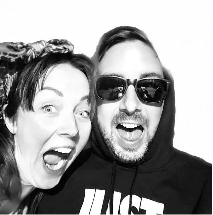
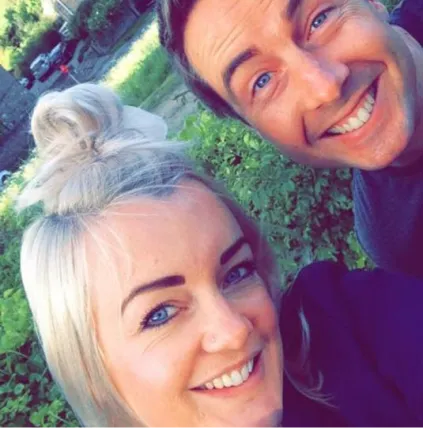
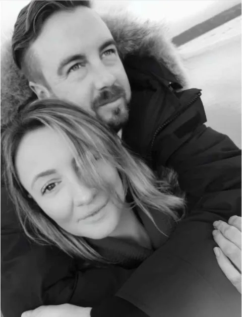

Victoria Taylor
Trustee, Charlie's big sister
Victoria has spent her full career in the hospitality industry. She is a true people person and enjoys connecting with individuals and hearing about what drives them. Victoria was extremely close to her brother, supporting him through challenging times and encouraging others to do the same.
Read Victoria's memories

Alexandra Lancaster
Trustee, Charlie's little sister
Alexandra has worked in the beauty industry for eighteen years. In 2017 Charlie encouraged Alexandra to go it alone and shared his knowledge of business to help her get up and running. She has since grown a successful salon, There She Glows.
Read Alexandra's memories

Gemma Stanham
Charlie's partner
Gemma moved to York for her studies and decided to stay, building a life in the city. Gemma recognises the importance of the vital services provided by mental health charities and is keen to raise awareness and promote mental wellbeing.
Read Gemma's memories
Oliver Bell-Syer
Treasurer, Charlie's friend
Oliver lives in York with his wife Jolyse and son Digby. He is an active member of York Round Table, which he joined with Charlie in an effort to give back to the community through fundraising and volunteering.
Read Oliver's memories